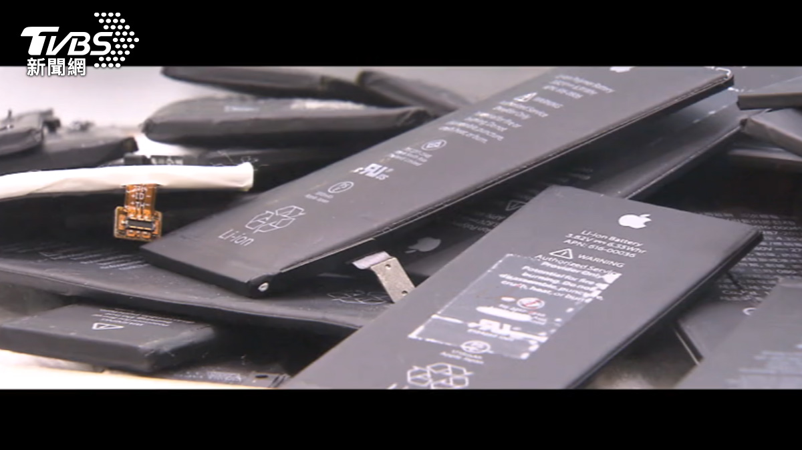

電池不只儲電還能生金？揭開鋰電池回收的億萬潛力
◎ 報導／王皓宇
◎ 攝影／李皇龍
◎ 發布日期／2025.04.20
◎ 更新日期／2026.08.20

◎ 報導／王皓宇
◎ 攝影／李皇龍
◎ 發布日期／2025.04.20
◎ 更新日期／2026.08.20
每天都在用的手機、筆電、電動車，全靠電池驅動，當電池退役後，它們去了哪？在看不到的回收場裡，低調的「城市採礦」正悄悄展開。從廢棄鋰電池中提煉出鎳、鈷、鋰等稀有金屬，不只是資源循環，更攸關未來的產業競爭力與環境永續。隨著電動車時代來臨，鋰電池回收產業正迅速擴大，然而，有了技術後，市場準備好了嗎？
從手機、筆電到電動車，我們每天依賴的電池，最後去了哪？不同種類的廢電池，隨著產線前進，工作人員仔細挑選分類。
資深記者王皓宇：「回收後的電池送到處理廠，經過人工分選，過去3C產品的電池量體較少，國內回收再利用的經濟效益不大，但隨著電動車的時代來臨，未來10年車用電池將迎來爆炸性的成長，回收產業的規模也正在擴大。」
分選後，按照類別集中，這些廢棄電池，含金量最高的是它。
名仁資源廠長林峰州：「鋰電池回收的部分，除了一些其他的一些一般金屬，和一些塑膠這些東西主要是這個黑粉，那所謂的黑粉就是因為它裡面含有一些鋰鈷鎳的一些比較貴金屬。」
報廢鋰電池，經過拆解、破碎、處理後所產生的黑色粉末，可以提煉出產量稀缺的鎳、鈷、錳，具有極大的再利用價值。
銘福集團總裁陳福松：「城市採礦最重要，鋰電池裡面含有很多的高貴金屬成分，鋰電池要有相關的旅程像我們現在是做分類，再來你一定要有化學精煉，再來在製造商他們再全部還原回去。」
根據統計，108年，全國廢乾電池回收量為3700多公噸，其中約253公噸，約6.8%是廢鋰電池，112年，廢乾電池回收量只提升到4100多公噸，但卻有超過900公噸是二次鋰電池，占比達到21.7%。
資源循環署副執行祕書翁文穎：「從107年開始大概只有160公噸，那這近六年來已經成長到1.000公噸以上，在2024年達到了1082公噸的一個歷史新高，那預估在未來的六到七年間將會突破1萬公噸，這個成長量是達過10倍以上。」
鋰電池的產品應用，包括消費性電子產品、電動交通工具、工業儲能系統。事實上，電池在進到最終報廢之前，還會先經過梯次利用。

▲ 廢電池被視為「城市採礦」的重要來源，裡面藏有鋰、鈷、鎳等關鍵金屬。（圖／TVBS）
台南大學鋰電池發展中心主任張家欽：「梯次利用有兩大類，一大類就是我們再利用，再利用的意思就是我整組都不要亂動它，那因為它的這個電池慢慢的隨著時間老舊，它的容量可能衰退到80%或75%的位置，可是這整個電池都還是OK的，只是它的輸入跟輸出的能量就沒有這麼的優，所以我們就可以做再利用的功能，它就整組又拿去做假設做儲能的功能，或者做低速的這種遊園車的功能，那另外一種就是再製造的部分，最終最終就是我們剛剛提到的，我們這些礦物資源我們一定要把它回收回來，那因為我們台灣沒有礦場，就是說我們沒有這個鋰礦、鎳礦跟鈷礦，我們沒有這些資源，而剛好這些都已經進來了，對我們來講就是一種城市冶金。」
台南大學鋰電研發中心研究員陳弘源：「廢棄的電子我們在回收的過程，會經由物理破碎之後，可以回收銅箔鋼材隔離膜，藉由回收製程可以再生正極粉以及負極粉，將它再再生成一個全新的鋰電池。」
電極極片分條、滾壓，再捲繞，鋰電池的內部其實就長這樣。
資深記者王皓宇：「電池回收後的正極負極再生料經過處理之後可以重新再製作成鋰電池，達到循環再利用的目的。」
台南大學鋰電池發展中心主任張家欽：「我們永續的部分的話就要考慮整體的生命周期而這個生命周期是要考慮能量的生命周期，什麼是能量的生命週期，裡面如果講另外一個角度來看就是碳的生命週期因為電池本身就跟電有關，電就跟碳有關，那也就是跟我們環境永續有關。」
銘福集團總裁陳福松：「這些東西以前實際上都運到國外去做，但這個是高貴金屬，我們台灣現在我們已經有能力了，像我們公司一直在開發，開發到那個時候當然有材料去做，我們再多加一些產線，你如果沒有量怎麼做，再講回來提煉出來的東西，事實上我們國防科技更需要。」
國際將廢鋰電池視為戰略資源，但台灣將之視為廢棄物處理，無法讓產業升級。環境部成立後，積極輔導業者，去年將70%的廢鋰電池留在國內處理。
台灣資源再生協會理事長張添晉：「現在法規大概都已經把所有的廢棄物都先定位為資源了，從我們原來是有廢棄物的把它當資源，然後純化分離拿到的資源，會比我們從地上採礦的這一部分，省掉很多的碳排，提高它資源的使用效率，所以這部分現在就是技術的進步，或者低碳的應用就有助於我們生態的延續，也減少溫室氣體的排放。」
然而，「回收」的技術有了，但是「再利用」的市場夠大嗎？台灣製作鋰電池電芯的廠商少，就算從黑粉精煉出貴金屬，也只能輸出國外，無法達成「封閉式循環」。
資源循環署副執行秘書翁文穎：「歐盟電池法為例將來電池的製造需要用到原本電池的一個廢棄以後提煉出來的回收料，包括對於主要金屬鋰鈷鎳的一個成分，因為是國際的法規趨勢，國內這邊也會就是扶植國內的廠商遵循歐盟的規定，如果我們有輸出的產品，像是電動自行車或者是需要用到電池的產品要符合歐盟的法規。」
台灣資源再生協會理事長張添晉：「從循環經濟觀點來講這個才是永續的，因為一循環下去的話，它是無始無終亦始亦終始終相依，循環經濟它也可以降低40%左右的碳排，所以效益是很高的。」
目前政策方向是將貴金屬作為化工原料，優先留在國內應用，電池的永續發展上，法規還需與時俱進，才能完成循環經濟的最後一塊拼圖。


新聞部
副總經理 王結玲
陳致中・陳詩璧・胡瑞麒・華子琛・談雍雍・吳家瑜
節目部
T觀點／莊開文・吳家瑋・莊秀惠・趙昱涵
數位事業部
總監 郭瀧億
內容策展組／廖玉貞・彭嘉儀・林佳瑤・李佳綺
ESG永續發展部
賴盈文・蔣成偉・張玲玲・黎育如・徐新瑜

© TVBS Media Inc. All Rights Reserved｜聯利媒體股份有限公司